작업 흐름
- 입력
- 주제 하나(달의 창잡이, 거울의 검객, 종을 울리는 승려 …). 레퍼런스 영상이 있으면 그 스틸과 소리
- 브리프
- 레퍼런스 프롬프트의 문법에 주제를 채운
BRIEF.md: 전투원의 실루엣과 무기, 이름 붙인 세 능력(이동 · 타격 · 필살기), 영역의 모티프, 30초 박자표, 소리, 품질 기준과 피해야 할 것 - 설계
- 주제마다 새로 설계하는 전투원(관절 범위 검사를 통과하는 3D 뼈대, 따라오는 옷자락 · 머리 · 띠, 셀 질감의 얼굴)과 영역 모티프(눈 · 달 · 거울 · 인장 또는 새 모티프), 양쪽 방향의 캐스트 시트
- 연출
- 첫 프레임부터 움직이는 공격 → 정적 → 영역 전개 → 붕괴와 검은 공허 → 세계를 베는 일격 → 하얀 정적, 몸의 지난 경로로 그리는 먹물 잔상, 반전 · 검정 · 하양 · 붉은 충격 프레임, 멈춤과 흔들림, 세계를 미끄러뜨리는 절단
- 확인
- 콘택트 시트와 무작위 스틸을 브리프 기준(색 · 먹 · 몸 · 문법 · 구도)으로 채점, 모든 샷 · 빈 프레임 · 관절 범위 · 결정성 · 악보 검사
- 출력
- 30fps 1920×1080 MP4(모션 블러 · 176BPM 타악 · 베기 · 충격음 포함), ♪ 버튼으로 소리까지 재생하는 라이브 페이지, 엔진째 넣은 HTML 한 파일
cd ultimate-move-short
node scripts/check.mjs examples/thousand-moons/index.html
node scripts/render.mjs examples/thousand-moons/index.html --sheet 32 --scale .5 --q mb=1
node scripts/score.mjs examples/thousand-moons/score.js --dur 30 --out out/film.wav
node scripts/render.mjs examples/thousand-moons/index.html --workers 4 --audio out/film.wav
node scripts/new-film.mjs ../my-film요구 사항: Node + Playwright Chromium, ffmpeg. 네트워크와 GPU가 필요 없습니다(CPU에서 모션 블러를 넣은 1080p 한 프레임이 약 0.25–0.3초, 30초 영상을 워커 4개로 약 4분 반). 단계별 순서는 SKILL.md에 있습니다.
샘플
예제 「月蝕 · Thousand-Moon Eclipse」의 열두 장면, 같은 문법을 줄인 시작 템플릿, 전투원과 모티프를 돌려 보는 캐스트 시트입니다. 카드를 누르면 새 탭에서 그 순간에 멈춘 장면이 열리고, 브라우저가 먹 한 가닥부터 직접 그립니다.
月蝕 · Thousand-Moon Eclipse 16:9 · 30초 · 16샷
포니테일의 창잡이가 달그림자 걸음으로 먹물 잔상을 끌며 세 번 베고 내리꽂은 뒤, 하늘 가득 천 개의 달이 차올라 그녀를 바라봅니다. 달들은 핏빛으로 일식하며 깨져 창끝으로 빨려 들고, 한 번의 가로 베기가 세계를 붉은 실선으로 갈라 미끄러뜨립니다.
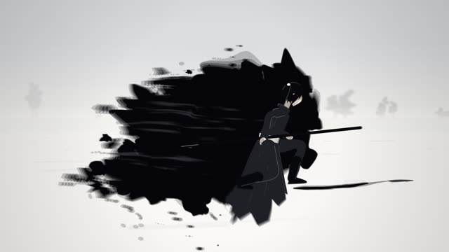
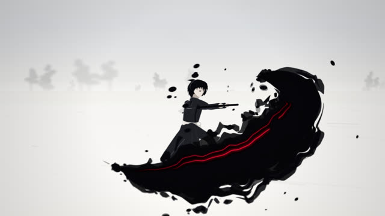
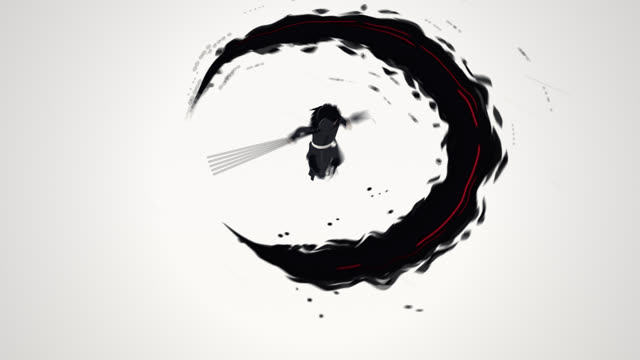
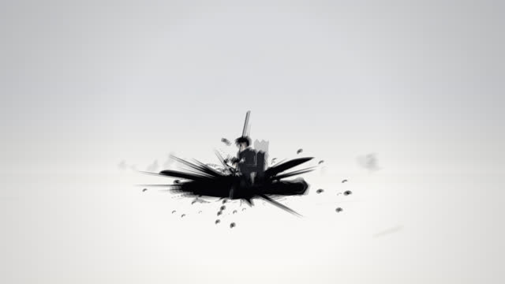
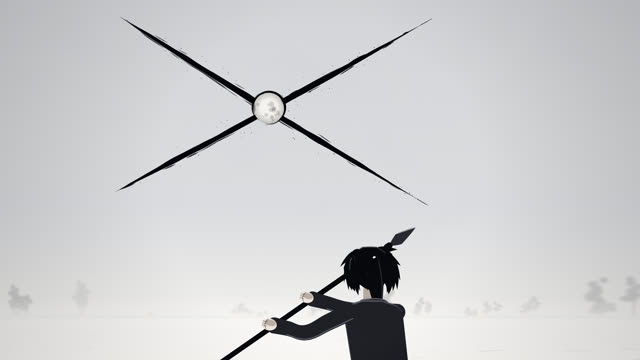
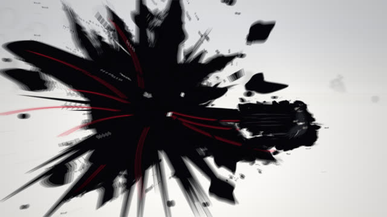
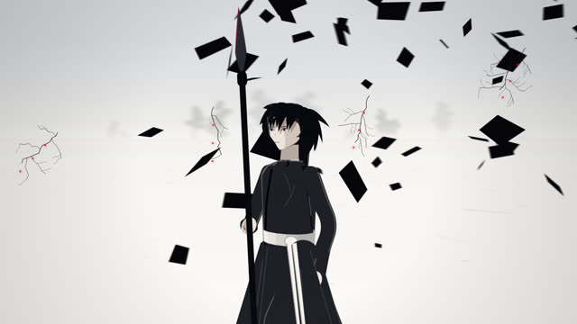
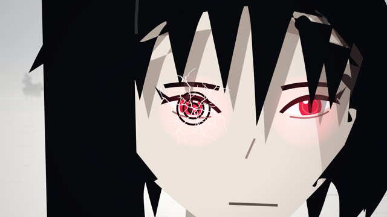
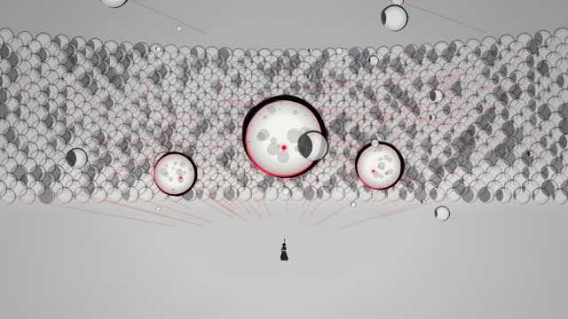
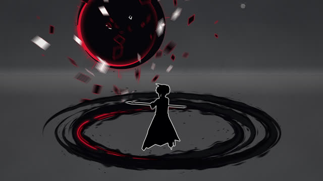
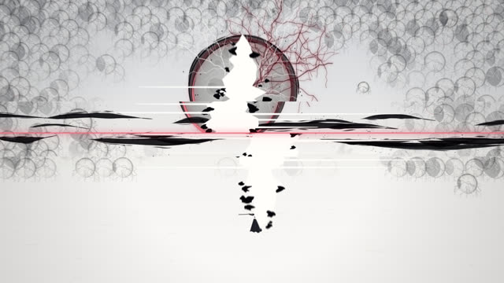
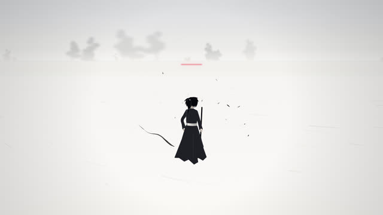
Mirror Step 템플릿 · 11.9초 · 8샷
같은 문법을 줄여 담은 출발점입니다. 짧은 머리의 검객이 베고 내리꽂고 멈춘 뒤, 거울 천 개가 열려 그를 비추고 깨지며, 한 번의 베기로 세계를 가릅니다.
캐스트 시트 examples/cast
전투원을 여덟 방향(정면 · 4분의 3 · 옆 · 등, 왼쪽과 오른쪽 모두)과 세 자세로 돌려 보고, 영역 모티프 넷이 열리고 깨지는 모습을 한 장에 그립니다. 관절 범위 검사가 이 페이지의 모든 인물에도 돕니다.
실제 작품
이 레포에서 만든 스킬입니다. 澜森(@lansenai)이 X에 올린 30초 영상(검은 옷의 검객, 천 개의 눈, 둘로 갈라지는 세계)과 첫 댓글에 올린 프롬프트가 출발점입니다. 그 영상은 AI 영상 모델이 만든 것이라, 이 스킬은 프롬프트와 화면의 문법(색의 절제, 먹물 잔상, 충격 프레임, 공격 → 정적 → 영역 → 일격 → 정적의 리듬)만 가져오고 그림은 직접 만든 엔진이 그립니다. 예제의 창잡이, 달의 영역, 안무, 음악은 모두 브리프에서 새로 설계했습니다.
링크
- SKILL.md 워크플로
- 폴더 lib · scripts · templates · references · examples
- README.md 빠른 시작
- references/BRIEF.md 레퍼런스 프롬프트 원문, 주제를 채우는 브리프 틀, 스틸 검토 기준
- references/STORY.md 주제 → 전투원과 세 능력, 30초 문법, 샷 표, 새 모티프 만들기
- references/LOOK.md 레퍼런스처럼 보이게 하는 것: 색, 전투원, 먹, 충격 프레임, 영역, 카메라, 리듬
- references/KIT.md API: Film, fighter, domain, fx, ink, world, score
- references/LESSONS.md 겪은 문제와 해결